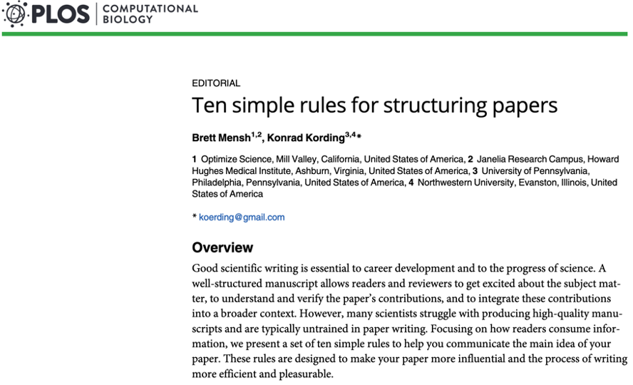
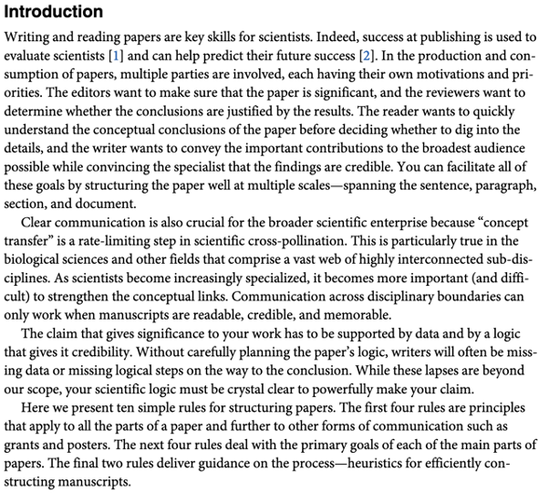
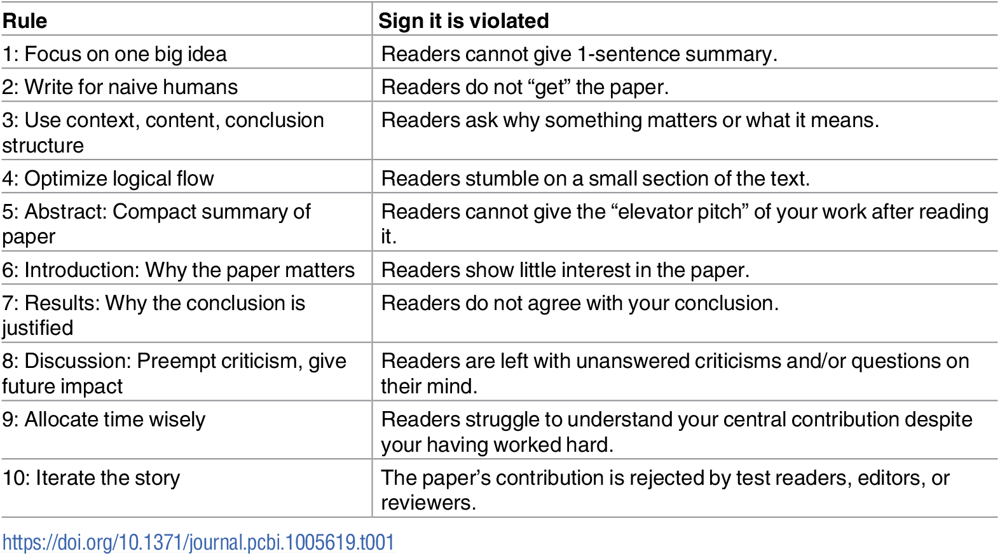

Chapter 6 - Writing about numeric data¶
2022 March 2

Key point:¶
Communicating results and scientific ideas through writing is something that is rarely taught, is difficult, and is essential for development in a research career and/or research support roles.
Goals¶
Review Mensh and Kording (2017) point by point to understand key takeaways for better grasping the scientific writing process.
Mensh B, Kording K (2017) Ten simple rules for structuring papers. PLoS Comput Biol 13(9): e1005619. https://doi.org/10.1371/journal.pcbi.1005619
Questions to keep in mind¶
What resonates with you from this article?
What do you disagree with and what might you suggest to improve it?
Not covered:¶
The creative process
Formatting
Submission guidelines

Principles (Rules 1-4)
“Writing is communication. Thus, the reader’s experience is of primary importance, and all writing serves this goal. When you write, you should constantly have your reader in mind. These four rules help you to avoid losing your reader.”
1. Focus your paper on a central contribution, which you communicate in the title.¶
Focus on a single message.
The title can summarize the main contribution and provide to you (the author) of the topic you must keep referring back to.
“This Rule of One is the most difficult rule to optimally implement because it comes face-to-face with the key challenge of science, which is to make the claim and/or model as simple as the data and logic can support but no simpler. In the end, your struggle to find this balance may appropriately result in “one contribution” that is multifaceted.”
It often makes the most sense to write the title (and abstract) last since the arc of your research project will likely evolve and through time.
2. Write for flesh-and-blood human beings who do not know your work.¶
“Because you are the world’s leading expert at exactly what you are doing, you are also the world’s least qualified person to judge your writing from the perspective of the naïve reader… Try to think through the paper like a naïve reader who must first be made to care about the problem you are addressing (see Rule 6) and then will want to understand your answer with minimal effort.”
“Define technical terms clearly because readers can become frustrated when they encounter a word that they don’t understand. Avoid abbreviations and acronyms so that readers do not have to go back to earlier sections to identify them.”
Try to write is more simply than you understand it.
3. Stick to the context-content-conclusion (C-C-C) scheme.¶
Context, content, conclusion¶
All scientific writing should have a beginning, middle, and end - even if that end is uncertain.
Ask yourself “So what?” and “Why should anyone care?” to help elaborate on the points you need to make.
Unless you are writing a one-page article for a popular journal/magazine, write for the patient reader.
“The C-C-C scheme defines the structure of the paper on multiple scales. At the whole-paper scale, the introduction sets the context, the results are the content, and the discussion brings home the conclusion. Applying C-C-C at the paragraph scale, the first sentence defines the topic or context, the body hosts the novel content put forth for the reader’s consideration, and the last sentence provides the conclusion to be remembered.”
“Deviating from the C-C-C structure often leads to papers that are hard to read…”
“They (the readers) do not care about the chronological path by which you reached a result; they just care about the ultimate claim and the logic supporting it (see Rule 7).”
4. Optimize your logical flow by avoiding zig-zag and using parallelism.¶
“Avoiding zig-zag. Only the central idea of the paper should be touched upon multiple times. Otherwise, each subject should be covered in only one place in order to minimize the number of subject changes. Related sentences or paragraphs should be strung together rather than interrupted by unrelated material. Ideas that are similar, such as two reasons why we should believe something, should come one immediately after the other.”
“Using parallelism. Similarly, across consecutive paragraphs or sentences, parallel messages should be communicated with parallel form. Parallelism makes it easier to read the text because the reader is familiar with the structure.”
“Resist the temptation to use a different word to refer to the same concept—doing so makes readers wonder if the second word has a slightly different meaning.”
The components of a paper (Rules 5–8)
“The individual parts of a paper—abstract, introduction, results, and discussion—have different objectives, and thus they each apply the C-C-C structure a little differently in order to achieve their objectives. We will discuss these specialized structures in this section and summarize them in Fig 1.”
5. Tell a complete story in the abstract.¶
“The abstract is, for most readers, the only part of the paper that will be read. This means that the abstract must convey the entire message of the paper effectively. To serve this purpose, the abstract’s structure is highly conserved. Each of the C-C-C elements is detailed below.”
Context: What gap will the paper fill?
Content: Describe the problem/issue/question/method/approach.
Conclusion: Provides interpretation for the task described in the Context and Content sections.
“This structure helps you avoid the most common mistake with the abstract, which is to talk about results before the reader is ready to understand them.”
6. Communicate why the paper matters in the introduction.¶
“The introduction highlights the gap that exists in current knowledge or methods and why it is important. This is usually done by a set of progressively more specific paragraphs that culminate in a clear exposition of what is lacking in the literature, followed by a paragraph summarizing what the paper does to fill that gap.”
It is generally acceptable to include a focused literature review in the Introduction section. Consider moving more peripheral information to a “Background” or “Literature Review” section - or an Appendix.
Evan’s literature review tip¶
Consider the six sentence annotation structure. Annotate everything relevant that you read. You can even store it in a spreadsheet for ease of reference.
Include one-sentance summaries for:
Abstract: what is the main take-home point of this research? (in your own words)
Introduction: what is the problem/issue/question/method/approach?
Materials/Data: what dataset was used?
Methods: which statistical/other methods were employed?
Results: what were the results?
Discussion: what are the impacts of the research? Limitations?
7. Deliver the results as a sequence of statements, supported by figures, that connect logically to support the central contribution.¶
“The results section needs to convince the reader that the central claim is supported by data and logic. Every scientific argument has its own particular logical structure, which dictates the sequence in which its elements should be presented.”
A common format is to open the results section with a few paragraphs, the first that summarizes all results. Than, the remaining paragraphs can include the details of each specific result.
REMEMBER! Do not include interpretation of your results here (this is what the Discussion section is for). It is okay to make this section descriptive and dry, as you are just presenting results here.
8. Discuss how the gap was filled, the limitations of the interpretation, and the relevance to the field.¶
“The discussion section explains how the results have filled the gap that was identified in the introduction, provides caveats to the interpretation, and describes how the paper advances the field by providing new opportunities. This is typically done by recapitulating the results, discussing the limitations, and then revealing how the central contribution may catalyze future progress. The first discussion paragraph is special in that it generally summarizes the important findings from the results section. Some readers skip over substantial parts of the results, so this paragraph at least gives them the gist of that section.”
Again, the first paragraph should provide some sort of summary of the results, followed by discussion of the implications of specific results.
You should consider adding one (or more) limitations sections: one for “Data limitations”, one for “Statistical Limitations”, etc.
Process (Rules 9 and 10)
“To produce a good paper, authors can use helpful processes and habits. Some aspects of a paper affect its impact more than others, which suggests that your investment of time should be weighted towards the issues that matter most. Moreover, iteratively using feedback from colleagues allows authors to improve the story at all levels to produce a powerful manuscript. Choosing the right process makes writing papers easier and more effective.”
9. Allocate time where it matters: Title, abstract, figures, and outlining.¶
“The central logic that underlies a scientific claim is paramount. It is also the bridge that connects the experimental phase of a research effort with the paper-writing phase. Thus, it is useful to formalize the logic of ongoing experimental efforts (e.g., during lab meetings) into an evolving document of some sort that will ultimately steer the outline of the paper.”
Make an outline and update it as the project evolves (see Fig. 1 below)
Text is color-coded as follows:
Introduction: blue text
Results: black text
Discussion: red text
Turn this outline into a rough draft and make preliminary edits early and often. Get the bad iterations out of the way sooner than later.
Figures always take longer than you think/hope/expect.
Everything takes a long time.
10. Get feedback to reduce, reuse, and recycle the story¶
“Writing can be considered an optimization problem in which you simultaneously improve the story, the outline, and all the component sentences. In this context, it is important not to get too attached to one’s writing. In many cases, trashing entire paragraphs and rewriting is a faster way to produce good text than incremental editing… There are multiple signs that further work is necessary on a manuscript (see Table 1).”
#Successfully writing a paper typically requires input from multiple people. Test readers are necessary to make sure that the overall story works. They can also give valuable input on where the story appears to move too quickly or too slowly. They can clarify when it is best to go back to the drawing board and retell the entire story. Reviewers are also extremely useful.”
Reviewer feedback often feels very mean (and sometimes really is), which can be discouraging. Thus, selecting the appropriate target journal is of utmost importance so that your writing will be well-received. Search for journals that would be a good fit for your research by reading their “Aims and Scope” (or something similarly titled) on their webpage.

Fig 1. Summary of a paper’s structural elements at three spatial scales: Across sections, across paragraphs, and within paragraphs. Note that the abstract is special in that it contains all three elements (Context, Content, and Conclusion), thus comprising all three colors.
Table 1. A summary of the ten rules and how to tell if they are being violated.

Quiz¶
Select two papers from your field of study: one that inspires you and one you have not yet read. Apply the principles from Table 1 above to see how well the authors follow the ten rules and if they have been violated.
Read du Prel et al’s (2009) paper Confidence interval or p-value?. What are the strengths and weaknesses of how scientific articles are evaluated in your field of study?